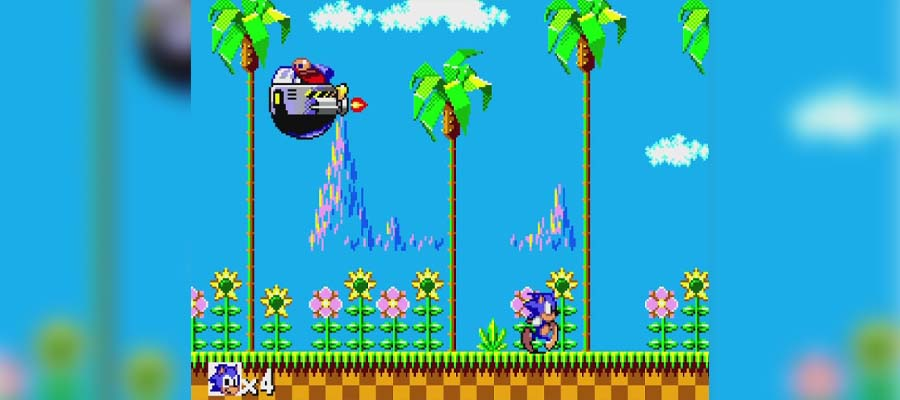
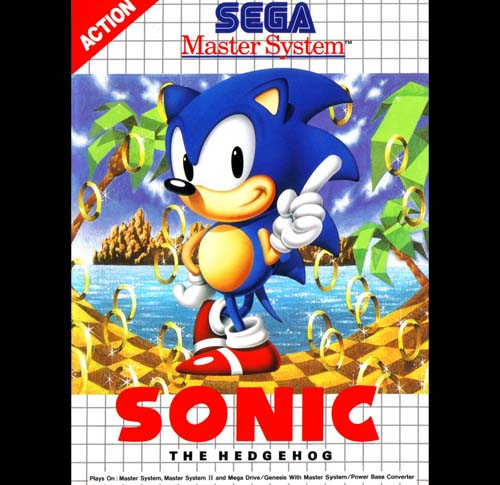

Sonic
 Sonic the Hedgehog, e um jogo de plataforma lançado em 1991 que apresenta o protagonista Sonic correndo pelos níveis do jogo para impedir os planos do Doutor Robotnik de dominar o mundo. O jogo se foca na habilidade de Sonic de correr e pular a altas velocidades com o uso de springs, slopes e loop-the-loops.
Quase todos os jogos da série apresentam um ouriço antropomórfico azul chamado Sonic como o personagem do jogador central e protagonista. Os jogos detalham a tentativa de Sonic e seus aliados de salvar o mundo de várias ameaças, principalmente o gênio do mal Dr. Ivo "Eggman" Robotnik, o antagonista principal da série. O objetivo principal de Robotnik é governar o mundo; para conseguir isso, ele geralmente tenta destruir Sonic e adquirir as poderosas Esmeraldas do Caos.